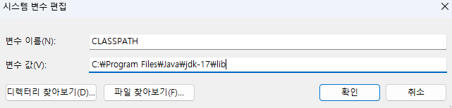
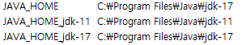
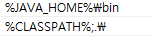
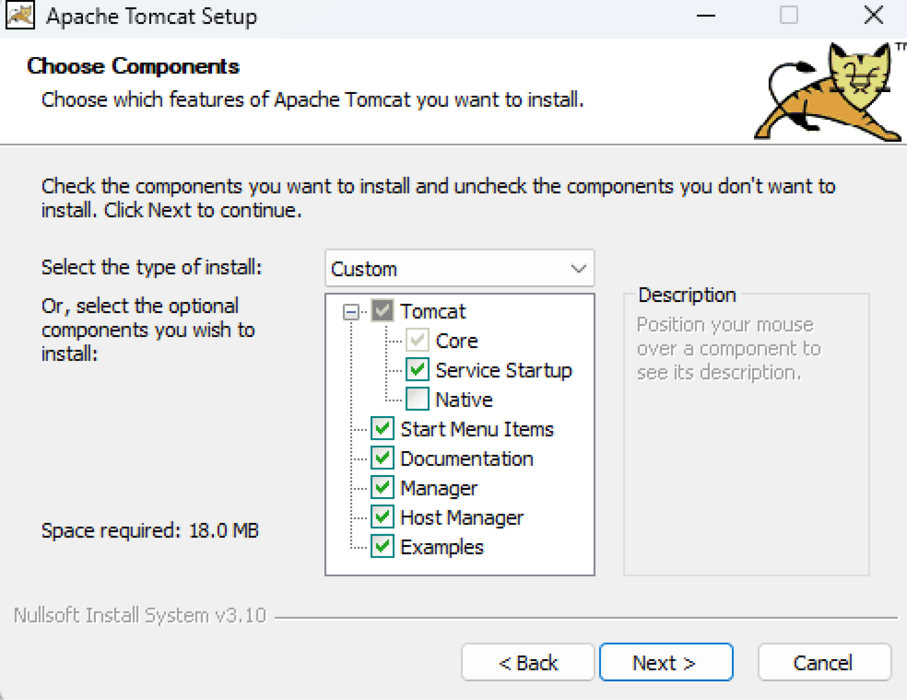
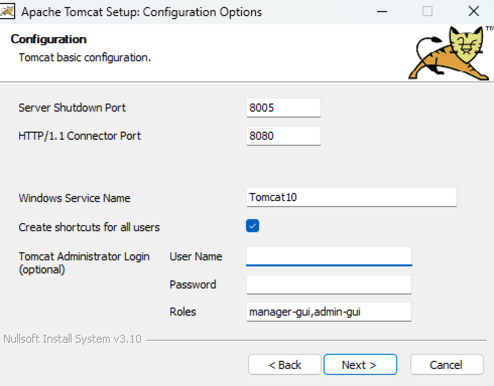
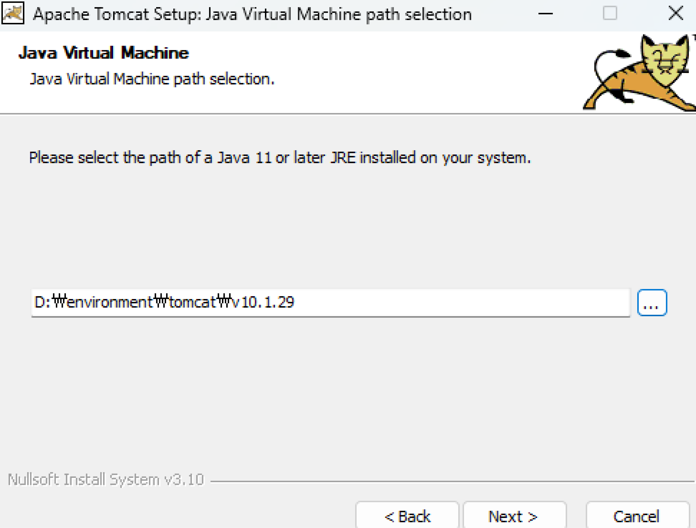

준비물
- 운영체제
- JDK version 17 ↑
- 환경 변수 설정
- WAS(Web Application Server)
- Editor
1. 운영체제
Windows 11 pro 사용
2. JDK
jdk는 17을 사용하였고 Oracle에서 installer파일로 C에 설치함.
3. 환경 변수 설정
내 PC -> 속성 -> 고급 시스템 속성 -> 고급 -> 환경 변수 -> 시스템 변수
CLASSPATH 생성
JAVA_HOME 생성
나중에 편하게 쓰기 위해 버전별로 미리 나눠놓음
path 편집
위 사진처럼 추가
4. WAS(Web Application Server)
Apache Tomcat 사용
다운로드
현재 사용 버전은 10.1.30
32-bit/64-bit Windows Service Installer (pgp, sha512) 다운 받고 실행
아래 순서대로 진행함

Native 빼고 클릭 (공부하는 과정이니 그냥 다 클릭함)


JVM 어디있냐고 물어보는거
본인이 설치한 곳 경로 지정하면 됨.
5. Editor
대표적으로 Eclipse랑 Intellij가 있는데 난 JSP에선 Eclipse 쓸 예정. 아니
둘 다 쓰려나?
쨌든 이거 설치 방법은 Editor 다운로드 방법 <== 여기
참고
마치며...
생각해보니 익숙한 vscode로 블로그 작성중인데 확실히 JSP에 익숙해지고
나중에 배포까지 연습하려면 JSP로 작성해야겠다.
사실 vercel로 배포하려고 했는데 내 손으로 배포하는게 훨씬 보람있을
듯..
10/1 - 자바 정리 + 블로그 JSP로 옮기기
10/3 - JSP 총정리